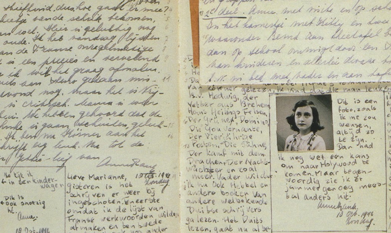

Otto Frank fue el único sobreviviente de los habitantes del escondite.
Miep Gies, que había sido una de las protectoras de los escondidos, recogió los escritos de Ana cuando ellos fueron deportados.
En 1947 Otto Frank decidió publicar el Diario de Ana que hoy está editado en todos los idiomas.
La casa que sirvió de escondite se transformó en museo en 1957, administrado por la Fundación Ana Frank que intenta combatir por medio de publicaciones y actividades educativas el antisemitismo, el racismo, la xenofobia y la intolerancia.
Otto Frank murió en Basilea, el 19 de agosto de 1980.